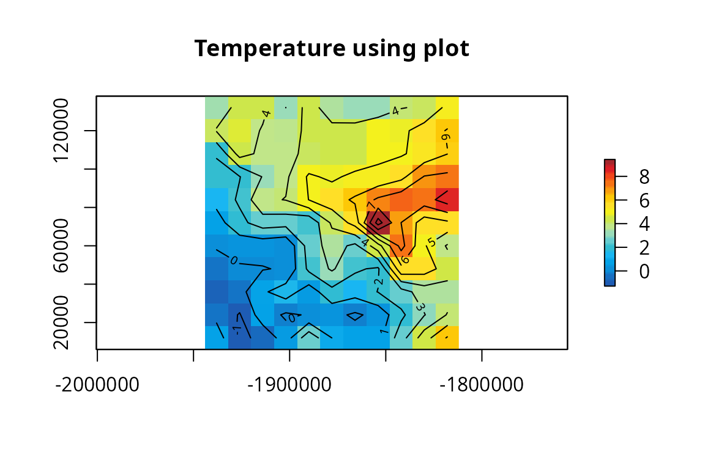

Based on this NCL
library(eixport)
library(raster)
#> Loading required package: sp
library(stars)
#> Loading required package: abind
#> Loading required package: sf
#> Linking to GEOS 3.12.1, GDAL 3.8.4, PROJ 9.4.0; sf_use_s2() is TRUE
library(cptcity)
library(sf)Reading Temperature
wrfo <- "/home/sergio/R/x86_64-pc-linux-gnu-library/4.3/helios/extras/wrfout_d01_2020-01-01_01%3A00%3A00_sub.nc"
t2 <- wrf_get(wrfo, "T2", as_raster = T)
t2[] <- t2[] -273.15# we select oneFind colour palette for temperature
find_cpt("temperature")
#> [1] "arendal_temperature" "idv_temperature" "jjg_misc_temperature"
#> [4] "kst_03_red_temperature"Based on NCL:
plot(t2[[1]], main = "Temperature using plot", col = cpt("arendal_temperature"))
contour(t2[[1]], add = T)
#spplot(t2, main = "Temperature 2m using spplot", scales=list(draw = TRUE),
# col.regions = cpt("idv_temperature"),
# sp.layout = list("sp.lines", as_Spatial(cl), col = "black"))